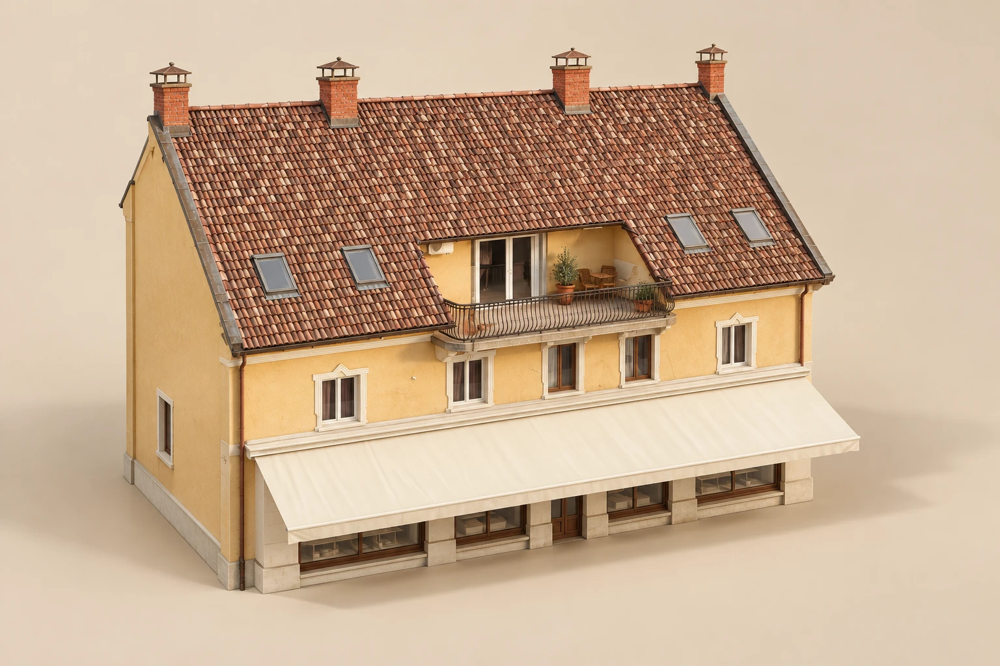

Müllers 2
Boutique Hotel and Wellness Experience

„A saját privát
butikhotel-élményed.”
Az egész ház. Csak nektek.
Egy születésnap a barátokkal. Egy hétvége a családdal. Egy régóta tervezett találkozás, amikor végre mindenki együtt van.
A Müllers 2-t ezekre az alkalmakra hoztuk létre. Amikor egy apartman már kevés, és olyan helyre vágytok, ahol a közös tereket és a wellnesst is csak ti használjátok.
600 négyzetméter közös élmény,
Siófok belvárosában.
A foglalásotok idejére a teljes ház a tiétek: a szobák, a kandallós társalgó, a teraszok, az udvari merülő és a wellnessrészleg. A privát használat a foglalás része, a társaságotok létszámától függetlenül.
Nektek csak megérkezni kell.
A kandallóhoz bekészített fa, a felmelegített jakuzzi és az előkészített, parajdi sóval működő sógenerátor vár benneteket. Hogy a hétvége a pihenésről és az együtt töltött időről szóljon.

Szobák
Pihenés a ház legfelső szintjén.
Tetőtéri hangulat · Meleg fények

Kandallós
társalgó
Egy közös tér a ráérős beszélgetésekhez.
Ropogó tűz · Kényelmes kanapék

Udvari merülő
Frissítő megálló az udvaron.
Jeges merülő · Parajdi só

Sószoba

Só a levegőben.
A Bestlifepro sógenerátor finomra őrölt sót juttat a helyiség levegőjébe. Így a só a levegőben is jelen van, miközben te kényelmesen pihensz.
Meleg fények. Csend. Idő magadra.
A sófelhő szemléltető animáció.

Szauna
Lassíts le a fa melegében.
Faburkolatú tér · Hangulatos fények

Jakuzzi
Merülj el a pihenésben.
Pezsgő víz · Esti fények
Müllers 2
Wellness
Foglalás Online foglalás hamarosan.